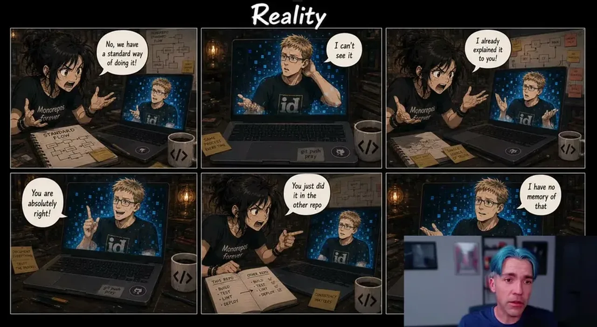
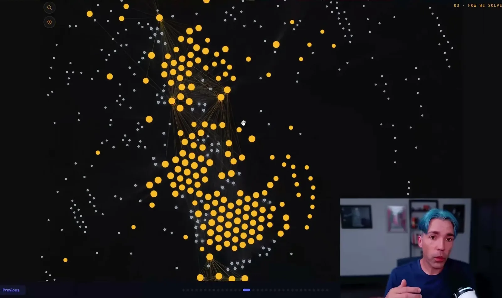
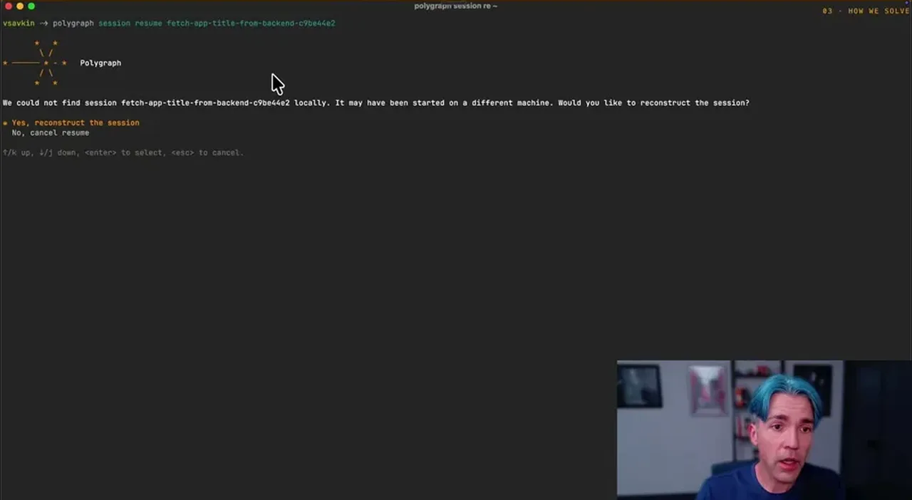

Savkin walks through a 4-repo change (UI library to module 1 to module 2 to platform, plus a production bug fix a week later) and counts 7 separate re-explanations of what is conceptually one change, because each new agent session starts with no memory and no view outside its own repo. He frames this as two compounding limits: agents are repo-bound (space) and agents forget everything between sessions (time).
“So we have seven explanations for what essentially is one change.”
▶ watch at 02:32“Agent forget the work. Every session start with a blank slate. The human becomes the memory in this case. That's the time component of the problem”
▶ watch at 03:08
Because an agent can't see downstream consumers, it can't validate a change against them even when CI should catch the break, and the module 1 CI 'should have failed on the UI change, but it didn't' because the change wasn't propagated. Changing something across 20 repos means re-explaining it 20 times, at real developer-time and token cost.
“Modules one CI should have failed on the UI change, but it didn't. The agent can't update consumers at the same time”
▶ watch at 03:40Polygraph is described as an agent-agnostic meta-harness that analyzes a user's repos (roughly 300 owned plus thousands of open-source dependencies in Savkin's case) without changing any code, extracting what each repo/project produces and consumes (APIs, packages) to stitch them into one navigable graph. A session lets a user pick relevant repos, and Polygraph sets up source, dependencies, and a coordinated agent per repo.
“This is my personal graph. I want to have about 300 repos I own, right? And thousands of open source repos my projects depend on”
▶ watch at 07:19“Polygraph computes what each one produces, each repo, each project in each repo, what each project in each repo consumes package-wise, what API they produce and consume”
▶ watch at 07:50
When multiple repos are touched in one session, Polygraph treats all their CI results as a single vector: if one repo's CI fails, it determines whether that repo needs a patch or the upstream repo is actually the incompatible one, and can apply the fix to the party responsible.
“Polygraph treats all the CI as one vector. Like if you look at the earlier example, uh when we run CI for UI module one and module two, if module one fails within a polygraph session, it will figure out who fixes it”
▶ watch at 08:53Because Polygraph captures all agent traces alongside the repo graph, a full session -- including which repos and exact SHAs were involved and the agent's history -- can be reconstructed on a different machine, by a different engineer, using a different agent than the one originally used, with no new setup or re-explanation required. Savkin demonstrates resuming a colleague's session to review a PR and to fix a production bug by referencing the original session rather than re-explaining the original change.
“They use different terminal, all right? Uh they would reconstruct it on their machine. They don't have the session, right? They have never worked on it”
▶ watch at 13:00“I usually don't ask the person. I resume their session on my machine, I get the exact state, fully functional, zero setup”
▶ watch at 14:36
The framing worth stress-testing: Polygraph solves the coordination overhead of re-explaining a change, but it doesn't address whether the agent understood the change correctly the first time -- shared memory propagates both good context and mistakes equally fast across a 'hive mind' of sessions, which could make an error someone missed catching in one repo silently reused as a pattern in others (ours).
| Stance | Claim | t |
|---|---|---|
| asserts | A single conceptual UI change propagating through 4 repos plus a later production bug fix required 7 separate re-explanations to different agent sessions. | 02:32 |
| asserts | Agents are constrained in space (repo-bound, can't see the whole system) and in time (no memory between sessions, forcing the human to be the memory). | 03:08 |
| warns | Because the agent writes to one repo at a time, it can't validate changes downstream, so CI that should have failed on an upstream change doesn't. | 03:40 |
| asserts | Polygraph analyzes metadata across roughly 300 owned repos and thousands of open-source dependencies without changing any code in them. | 07:19 |
| asserts | Polygraph computes what each repo and project produces and consumes package-wise, including APIs, to stitch repos into one navigable body of code. | 07:50 |
| recommends | Polygraph treats CI across all repos in a session as one vector, determining whether a failing downstream repo needs a patch or the upstream change is the actual incompatibility. | 08:53 |
| asserts | A session including repos, exact SHAs, and agent history can be resumed by a different engineer on a different machine using a different agent, without any new setup. | 13:00 |
| recommends | The author resumes a colleague's session to review their PR by getting the exact state fully functional with zero setup, rather than asking the person directly. | 14:36 |
Machine-readable copy embedded in this page (script#ontology) and in the corpus ontology.